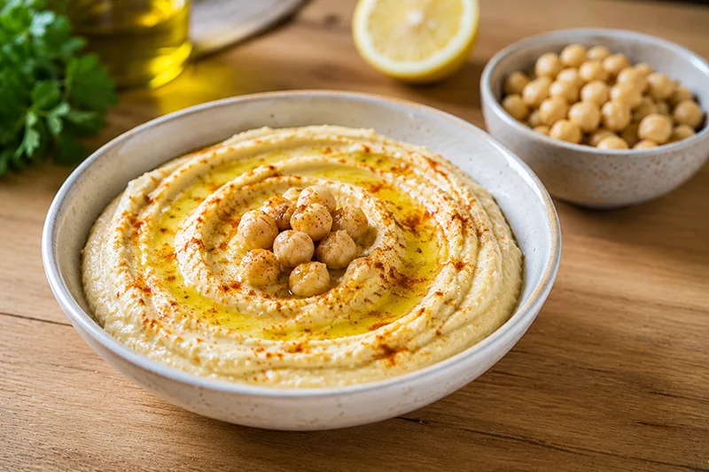

Receta saludable
Hummus casero
El hummus casero es una crema de garbanzos suave y cremosa, perfecta para acompañar verduras, tostadas o como aperitivo. Una receta sencilla y saludable lista en pocos minutos.
Ingredientes
- 400 g de garbanzos cocidos
- 2 cucharadas de tahini
- 1 limón
- 1 diente de ajo
- 2 cucharadas de aceite de oliva virgen extra
- 1/2 cucharadita de comino molido
- 2 o 3 cucharadas de agua
- Sal al gusto
- Pimentón dulce para decorar (opcional)
Preparación
- Escurre y aclara los garbanzos bajo el grifo.
- Exprime el limón.
- Coloca los garbanzos, el tahini, el zumo de limón, el ajo, el aceite de oliva, el comino y la sal en el vaso de una batidora.
- Tritura hasta obtener una crema homogénea.
- Añade el agua poco a poco hasta conseguir una textura suave y cremosa.
- Sirve el hummus en un cuenco y decóralo con un chorrito de aceite de oliva y una pizca de pimentón dulce si lo deseas.
Consejo práctico
Si quieres un hummus especialmente cremoso, pela los garbanzos antes de triturarlos. Lleva unos minutos más, pero la textura mejora notablemente.